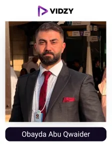
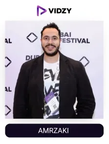
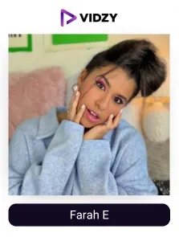
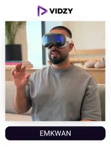
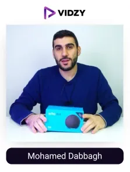
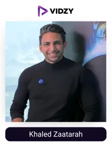
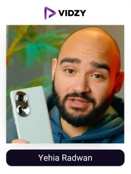
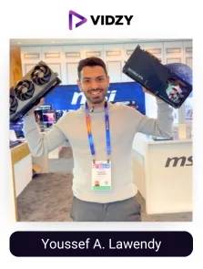

We are in an era when it's hard to imagine life without technology. From smartphones to AI and wearable health trackers, tech is everywhere, helping us work smarter, faster, and stay connected.
The UAE, with its innovative and advanced technologies and a savvy population, has become a global hub for technology. The tech industry is expected to reach around $4.79 billion by 2029, with progressive growth in key areas such as artificial intelligence, cloud computing, blockchain, and the Internet of Things. (TELECOM Review)
In this fast-growing space, tech UGC creators are playing an important role in shaping how people interact with technology. By staying updated with the latest technological trends, they ensure their content remains simple, fresh, and relevant. Through social media platforms, they inspire their audience to embrace new technologies and make confident choices.
Dubai is home to many famous technology UGC creators who, with genuine reviews, tech tutorials, and interactive comparison videos, bridge the gap between consumers and technology. The best technology content creators turn complex tech jargon into simple and engaging content, thereby making their endorsements highly impactful.
Approximately 75% of UAE residents follow them to get insights on the latest products and make informed purchasing decisions. That’s why brands in the UAE are connecting with top technology influencers in Dubai through a leading UGC agency like Vidzy to utilise the potential of UGC in boosting their visibility, building credibility, and enhancing ROI.
Vidzy, the best UGC agency in Dubai, has discovered the list of top technology UGC creators in Dubai, UAE, based on their content quality, audience engagement, and ability to connect with their followers, enabling brands to easily understand the influence and tap into their potential to reap unparalleled results.
Best Technology Influencers In Dubai, UAE
Contents
-

1. Obaida Abu Qwaider
Channel: Obaida Abu Qwaider
Followers: 545KEngagement Rate: 1.23%About The Influencers-
Obayda Abu Qwaider is a tech content creator based in Dubai. His content is mostly focused on cybersecurity, AI, and gadget reviews. It includes tech tips, smartphone comparisons, and advice on digital safety.
Obaida has collaborated with many local and global tech giants and governing authorities, making him one of the best tech influencers in the region.
-

2. AMRZAKI
Channel: AMRZAKI
Followers: 411KEngagement Rate: 1.39%About The Influencers-
Amr Zaki is a digital content strategist and podcast host based in Dubai. He runs the ZME Podcast, where he talks about technology, art, and design. His focus is on helping people understand and use AI tools.
On Instagram, he shares lifestyle content, cultural events, and his thoughts. He also works on an initiative called Intelligence Not Artificial, which explains AI for Arabic-speaking audiences.
-

3. Farah E
Channel: Farah E
Followers: 1.1MEngagement Rate: 2.20%About The Influencers-
Farah El Kordy is a content creator based in Dubai, UAE. She shares short videos on AI, tech, business, and digital marketing. She also explains changing consumer behaviour in response to new technological trends.
Farah is known for her engaging storytelling. Her unboxing videos and GITEX exploration are very much admired by her tech-loving followers. She has developed an impressive identity as a digital content creator in Dubai for her captivating and informative content.
-
4. AbdulMhan
Channel: AbdulMhan
Followers: 891KEngagement Rate: 3.72%About The Influencers-
Abdulrhman is a tech content creator based in the UAE. He shares short videos on Instagram, focusing on topics like tech, gadgets, and digital marketing. His content often includes product reviews, app demonstrations, and tips for creators. He shares the information mostly in Arabic.
He does unboxing videos, product comparisons and giveaways for various gadgets, which include smartphones, webcams, laptops and other smart devices. Etc.
-

5. Emkwan
Channel: Emkwan
Followers: 163KEngagement Rate: 1.59%About The Influencers-
Emkwan is a popular tech content creator based in the UAE. He shares content on gadgets, AI and also on everyday lifestyle topics. He is the winner of the Esquire ‘Man At His Best’ Award. He was also acknowledged as ‘one of the UAE's Key Online Digital Personalities’ by The National. He has been named one of Dubai’s Top 10 Tech Influencers in 2025. On Instagram, he is known for his amazing unboxing videos, detailed gadget reviews and latest tech updates.
Emkwan suggests the best accessories to complement every gadget and improve its usage experience. His videos are short, clear, and helpful for anyone who wants to know about new technology.
-

6. Mohamed Dabbagh
Channel: Mohamed Dabbagh
Followers: 15KEngagement Rate: 1.89%About The Influencers-
Mohamed Dabbagh is a tech content creator from Abu Dhabi, UAE. He shares a variety of tech-related content, including product reviews, unboxings, and insights into the latest tech innovations. His content features hands-on demonstrations of gadgets such as headphones, smartphones, and PC components, which gives his audience detailed information about the products.
Mohamed also offers Amazon links to his tech recommendations to make shopping easier for his followers. His knowledge of building a PC from scratch is appreciated by his tech-loving community.
-
7. Abdallah Rakha
Channel: Abdallah Rakha
Followers: 332KEngagement Rate: 1.70%About The Influencers-
Abdallah Rakha is a tech influencer living in Dubai. He shares topics on smartphones, laptops, headphones, and electric vehicles. He prepares detailed video explanations to give followers immersive, real-time insights into the latest gadgets, software, apps, and hardware setups.
His content covers everything from smartphones, smartwatches, and drones to smart television, VR headsets, tablets, and more.
-

8. Khaled Zaatarah
Channel: Khaled Zaatarah
Followers: 304KEngagement Rate: 1.81%About The Influencers-
Khaled Zaatarah is a tech content creator and entrepreneur. He is also the CEO of 360vuz and a talented public speaker.
Khaled shares content on technology, entrepreneurship, and innovation. He also shares motivational messages with his audiences. He has worked with major brands like Apple, Amazon, and CNN and has participated in many global tech events.
-

9. Yehia Radwan
Channel: Yehia Radwan
Followers: 291KEngagement Rate: 1.87%About The Influencers-
Yehia Radwan is a famous tech content creator based in Dubai. He focuses on technology, gadgets, and camera equipment. His content includes detailed reviews and demonstrations, daily tech updates, product demos, and interviews.
His content provides practical insights and real-time usage of the latest tech.
-

10. Youssef A. Law endy
Channel: Youssef A. Law endy
Followers: 162KEngagement Rate: 1.30%About The Influencers-
Youssef A. Lawendy is a tech content creator in the UAE. He creates informational videos like unboxings, reviews, comparisons, and giveaways. He covers all kinds of gadgets, including smartphones, webcams, earbuds, laptops, smartwatches, and more.
Youssef is known for his extensive knowledge of tech products and for sharing it in a way that is easy to understand and useful for his tech-savvy audience.
Conclusion:
In the UAE, top tech UGC creators are making technology more accessible and easier to understand. Through honest reviews, comparison videos, and product tutorials, they help people understand technology better and make smart buying choices.
For brands in the UAE, partnering with tech UGC creators enables them to enhance their reach, build credibility and turn casual viewers into confident buyers. As a leading UGC agency in the UAE, we connect tech brands with the best technology content creators in the region to help them achieve remarkable growth results with the power of word-of-mouth marketing.
Looking to grow your brand name through authentic voices? Connect with us and make your brand stand out.